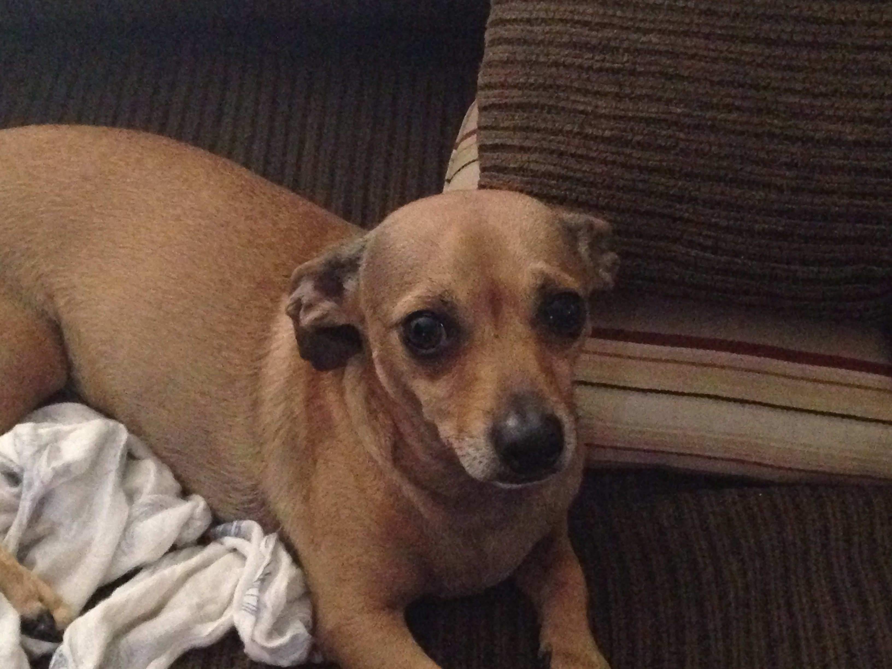

Bailey is 22 years old. She is a Calico Maine Coon. My family had a few months before I was born. She is the kindess, and most caring cat I've ever seen
She is 4 years. She is a lab mix. She is kind and sweet. She gives you hbs if you have her in your arms. She is completely sweet. You'll love her if you get to meet her.

Moose is 5 years. The week we got him was the last week of Febuary 2018.

When you first meet him he might seem rude. But, it might be because he is losing his eye sight. We think he is loosing it because no matter who it is. He barks at you. He is a chihuahua weiner dog. He is always around my brother Landon. I am 2nd in the line that he chooses to hang out with when my brother isn't home.